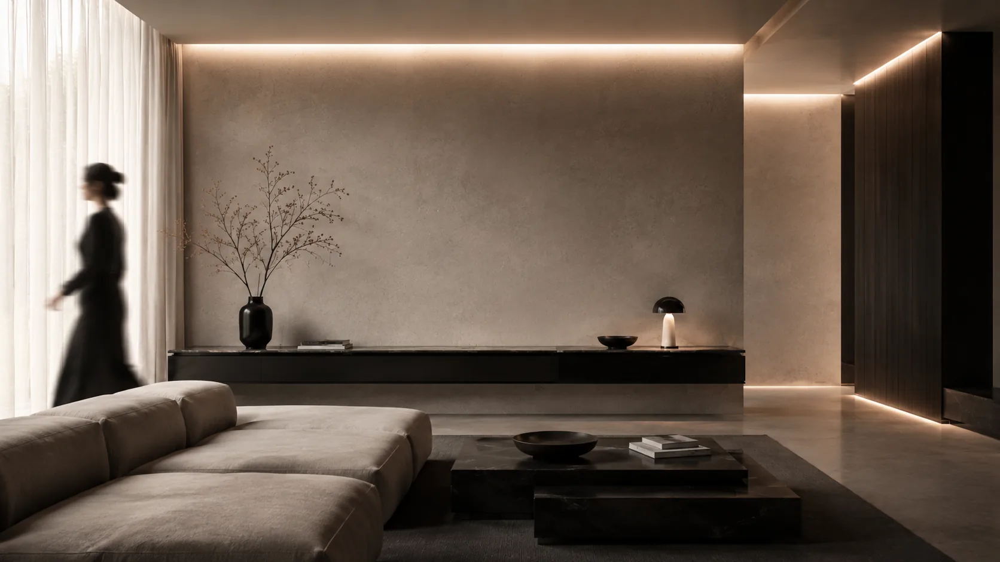
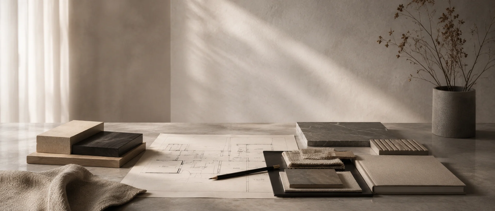
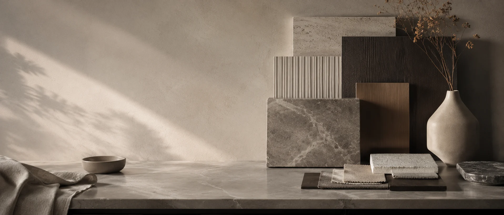
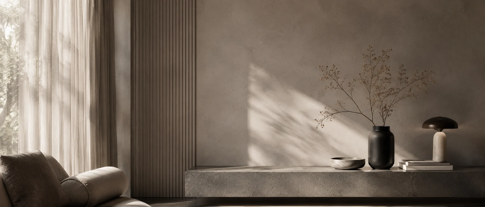
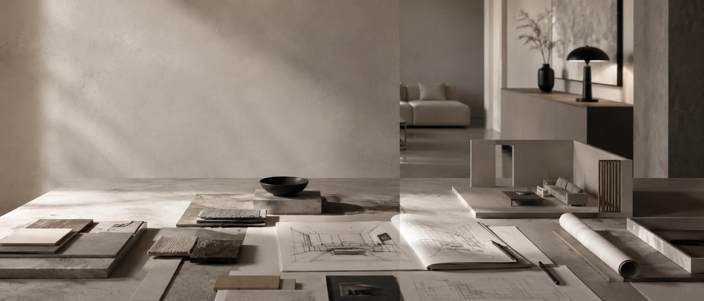
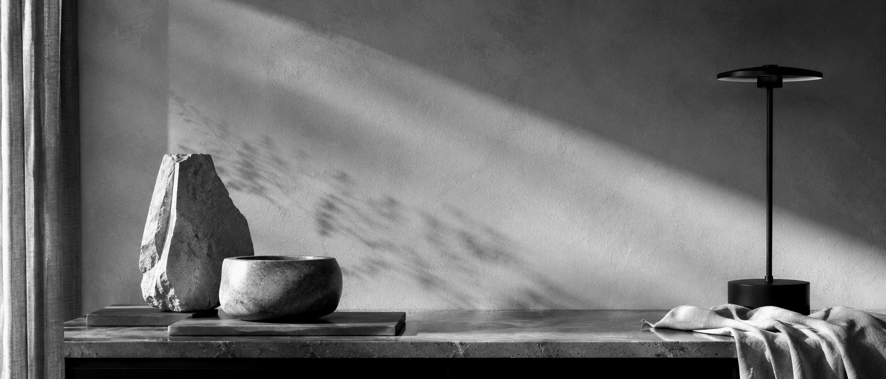

Brief
metraż, lokalizacja, etap inwestycji
 MONIKA SERBISTAPROJEKTOWANIE WNĘTRZ
MONIKA SERBISTAPROJEKTOWANIE WNĘTRZ

Oferta
Zakres dobieramy po rozmowie o wnętrzu: od konsultacji i jednego pomieszczenia po kompleksowy projekt mieszkania lub domu w Ciechanowie, Warszawie i okolicach.
Jak pracujemy
Nie zaczynamy od gotowej tabeli pakietów. Najpierw sprawdzamy, czy wnętrze potrzebuje pełnego prowadzenia, projektu wybranej strefy, konsultacji czy wsparcia przy decyzjach wykonawczych.
Zobacz zakres ↗
Zakres współpracy
Każda opcja prowadzi do jasnych decyzji: funkcji, materiałów, światła, proporcji i kolejnych kroków potrzebnych do realizacji.

01 Projekt kompleksowy mieszkanie / dom +Najpełniejszy zakres dla inwestycji, która potrzebuje spójnego prowadzenia od układu funkcjonalnego po dokumentację dla wykonawców.

02 Wybrane pomieszczenie kuchnia / łazienka / salon +Dobry wybór, kiedy najważniejszy problem dotyczy jednej strefy: trudnej kuchni, łazienki, salonu, sypialni albo miejsca pracy.

03 Konsultacja projektowa decyzje przed remontem +Krótka i konkretna forma współpracy, która pomaga uporządkować pomysły, ograniczenia oraz wybory przed zakupami lub startem prac.

04 Wsparcie realizacyjne kontrola decyzji +Wsparcie w trakcie realizacji, kiedy pojawiają się pytania o zamienniki, materiały, wykonawców albo doprecyzowanie założeń.
Proces
metraż, lokalizacja, etap inwestycji
funkcja, ograniczenia i priorytety
układ, materiały, światło i klimat
rysunki i wytyczne dla wykonawców
decyzje podczas realizacji
